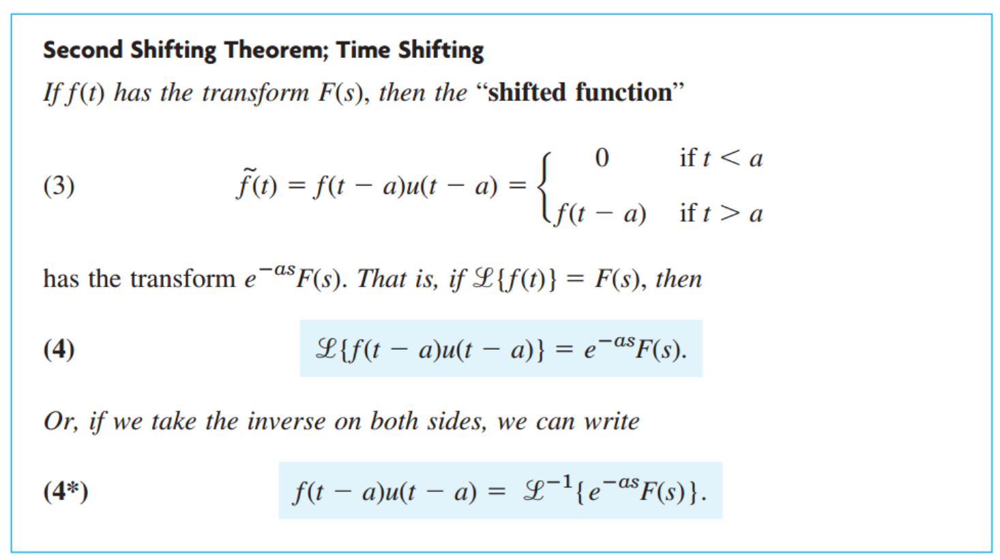
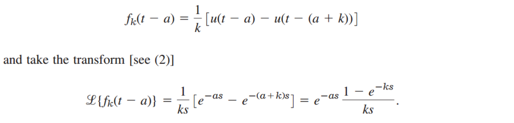

[Engineering Mathematics] Ch 6. Laplace Transform - Unit step function, Dirac's delta function
우리는 새로운 개념, Laplace Transform 에 대해서,
그리고 성질에 대해서 배워 보았다.
최종목표는 어려운 ODE를 푸는 것이다.
그러기 위해서 재료들을 배우는 과정
근데 문제는 재료가 더있다. 바로
Unit Step function
사실 이해하면 정말 쉬운 함수이다.
![[Engineering Mathematics] Ch 6. Laplace Transform - Unit step function, Dirac's delta function](./images/img-001.png)
![[Engineering Mathematics] Ch 6. Laplace Transform - Unit step function, Dirac's delta function](./images/img-002.png)
그래프를 보면, 바로 이해가 갈 것이다. 그니까 u(t-a)에서 a보다 클때는 1 작을때는 0 이란 말.
u(t-a)의 라플라스는 정의대로 다음과 같다.
![[Engineering Mathematics] Ch 6. Laplace Transform - Unit step function, Dirac's delta function](./images/img-003.png)
![[Engineering Mathematics] Ch 6. Laplace Transform - Unit step function, Dirac's delta function](./images/img-004.png)
그리고 이 정의를 이용해서, Laplace에 shifting Theorem 을 정의할 수 있다.

실제 (t-a)u(t-a)를 정의대로 Laplace transform해주면, 해답이 나옴을 확인 할 수 있다. 간단한 적분.
한가지 더 살펴보자.
Short Impulses: Dirac's Detla function
시작은 Impulse 에서
시작한다.
충격량은 운동량의 변화량, 야구방망이로 공을 칠때,
짧은 시간동안 공과 방망이가 접촉하고, 힘과 그 짧은 시간의 곱을 충격량이라 정의한다(Impulse)
그리고 이 충격량은 야구공의 운동량의 변화량과같다.
고등 물리시간에 다들 배웠던 기억이 있을 것이다.
이제 이 충격량은 시간에 따른 함수로 표현해주자.
밑의 함수를 Dirac's delta function이라고 정의한다
. (x축은 시간, y축은 힘)
![[Engineering Mathematics] Ch 6. Laplace Transform - Unit step function, Dirac's delta function](./images/img-006.png)
그리고 충격량은 면적이기 때문에, 다음과 같이 정의할 수 있다. (충격량 = 1 인 경우)
![[Engineering Mathematics] Ch 6. Laplace Transform - Unit step function, Dirac's delta function](./images/img-007.png)
만약에, 시간에 정말 정말 작다면????
면적은 일정하므로 높이는 무한에 가까워 질 것이다.
이때 높이를, Dirac Delta function이라고 정의힌다.
![[Engineering Mathematics] Ch 6. Laplace Transform - Unit step function, Dirac's delta function](./images/img-008.png)
그리고 위에서 정의한 대로, 수식으로 쓰면 다음과 같이 표현 할 수 있다.
![[Engineering Mathematics] Ch 6. Laplace Transform - Unit step function, Dirac's delta function](./images/img-009.png)
어딘가 쓸려고 이렇게 정의했겠죠???어디에 쓸까
한번 t에 대해서 연속적인 함수 g(t)가 있다고 가정해보자.
g(t)에 위에서 정의한 a에서만 면적이 1인 함수를 곱해주면???
적분 값은 g(a)일 것이다.
![[Engineering Mathematics] Ch 6. Laplace Transform - Unit step function, Dirac's delta function](./images/img-010.png)
지금까지 배운 δ 의 Laplace transform을 구해보자.
먼저,
δ의 정의에 필요한, fk(t-a) Laplace를 구하고, k를 0으로 보내주자.

이제, k를 0으로 보내주면 좌항은
δ의 Laplace transform 임을 알 수 있다.
우항의 오른쪽 k에 관한 식은 로비탈의 정리에 의해서
(분모,분자 미분후 k = 0대입)
k ->0 일때 1로 수렴함을 알 수 있다.
따라서,
![[Engineering Mathematics] Ch 6. Laplace Transform - Unit step function, Dirac's delta function](./images/img-012.png)
문제 풀이로 감을 잡아보자.
![[Engineering Mathematics] Ch 6. Laplace Transform - Unit step function, Dirac's delta function](./images/img-013.png)
![[Engineering Mathematics] Ch 6. Laplace Transform - Unit step function, Dirac's delta function](./images/img-014.jpg)